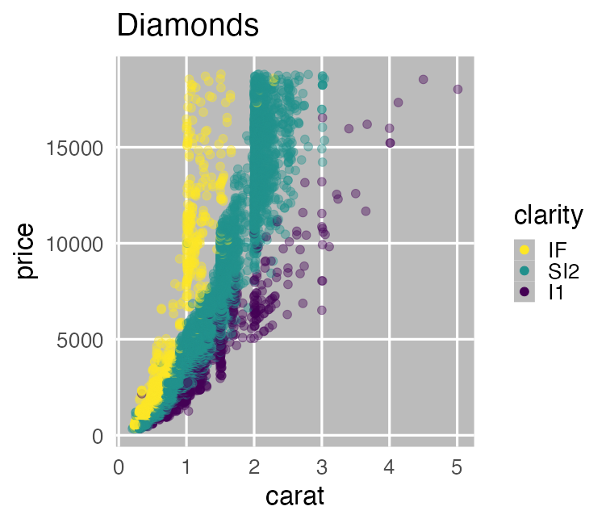
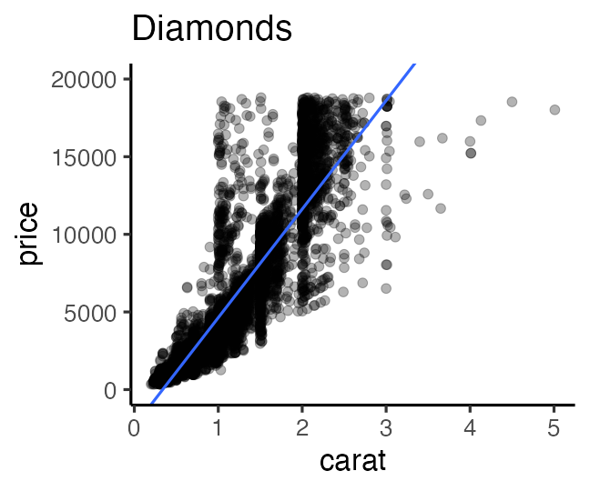

Hands-on Introduction to R 2023
- Introduction: what is data analysis and R basics
- Data visualization and reporting
- Data transformation 1: extract, summarize
- Data transformation 2: join, pivot
- Data cleansing and conversion: numbers, text
- Data input and interpretation
- Statistical modeling 1: probability distribution, likelihood
- Statistical modeling 2: linear regression
https://heavywatal.github.io/slides/english2023r/
Menu: basics of data handling
- Recognize the importance of data analysis in biological research
- What is “to understand”
- Learn R programming to be lazy in the long term
- data visualization
- data preparation
- reporting
- Introduction to data analysis
- Statistical modelling
- Data interpretation and pitfalls
Basic steps in biological research
- Find problems and make hypotheses.
- Collect data from experimentationüß´, observationüî¨, literatureüìö.
- Analyze the data and test the hypotheses
- Report results. Go back to 1.
- Experimentation and observation are only the first half.
- The other half involves data preparation, analyses, reporting.
→ but tend to be understated. We want to do it properly and easily.
Is data analysis necessary? Why not just raw data?
Raw data are often too complex and have too much information to make sense.
print(ggplot2::diamonds)
carat cut color clarity depth table price x y z
1 0.23 Ideal E SI2 61.5 55 326 3.95 3.98 2.43
2 0.21 Premium E SI1 59.8 61 326 3.89 3.84 2.31
3 0.23 Good E VS1 56.9 65 327 4.05 4.07 2.31
4 0.29 Premium I VS2 62.4 58 334 4.20 4.23 2.63
--
53937 0.72 Good D SI1 63.1 55 2757 5.69 5.75 3.61
53938 0.70 Very Good D SI1 62.8 60 2757 5.66 5.68 3.56
53939 0.86 Premium H SI2 61.0 58 2757 6.15 6.12 3.74
53940 0.75 Ideal D SI2 62.2 55 2757 5.83 5.87 3.64
A data set of diamonds (53,940 observations, 10 variables).
Take a look at summary statistics
average, standard deviation, etc. of each column:
stat carat depth table price
1 mean 0.80 61.75 57.46 3932.80
2 sd 0.47 1.43 2.23 3989.44
3 max 5.01 79.00 95.00 18823.00
4 min 0.20 43.00 43.00 326.00
carat and price looks positively correlated:
carat depth table price
carat 1.00
depth 0.03 1.00
table 0.18 -0.30 1.00
price 0.92 -0.01 0.13 1.00
OK, summary stats may help better understanding than raw data do.
But be aware……
Never trust summary statics alone
Interesting relationships may be overlooked without visualization.


Data visualization is the first step of understanding
Reduction and reorganization of information → intuitive understanding

The larger carat, the higher price.
The slope seems to differ by clarity.
Statistical analysis
is the process of summarizing data and making inferences based on it.
- Descriptive statistics: summarizes data themselves
- summary stats (e.g., average, standard deviation, etc.)
- making figures and tables
- Inferential statistics: considers processes behind data
- mathematical models
- probability distributions
- parameters
Modelling is necessary if you want more than “intuitive understanding”
Model
Simplified and idealized structures to represent a target system.
- Mathematical Models

- abstract structures written as mathematical representations.
- e.g., Lotka-Volterra eq., Hill eq.
- Computational Models

- sets of procedures to describe the behavior of a system
- e.g., Schelling’s Segregation Model, tumopp
- Concrete Models

- made of physical objects
- e.g., San Francisco Bay-Delta Model
Mathematical models in data science
Mathematical expression of assumptions to simulate data generation
 

Mathematical models in data science
Mathematical expression of assumptions to simulate data generation
e.g., the larger the more expensive: $\text{price} = A \times \text{carat} + B + \epsilon$

We now described diamonds price with a very simple equation.
→ Improving the model may lead to more accurate understanding.
Wet-lab experimentation is also a kind of modelling
to clearly show “altering X causes phenotype Y”.
- Reduce noises
- Uniform environment: nutrients, temperature, etc.
- Uniform genetic background: inbred lines
- Alter a few factors of interest
- Overfeed or deplete a specific nutrient
- Modify a few genes
Dry-lab theoreticians are tend to be called “modellers”,
but all the biological researchers are modellers in a broad sense.
Standing on the shoulders of giants

Standing_on_the_shoulders_of_giants
A new discovery is always based on the previous studies.
- Recording and reporting are very important
- every detail of experiments and observations
- multiple backups of raw data
- Data analysis and visualization are essential, but…
- people tend to do it with unreproducible artisanship
- selecting from menu, adjusting colors and positions…
- What if your research is under suspicion?
- What if somebody want to inherit your research?
Reproducible research makes the giants bigger.
An example of unreproducible research
A magnum opus thesis based on a massive data
from observation of animals’ behaviors and positions in a zoological park.

Raw data: not so bad, so far
The position and behavior of every individual were recorded.


Aggregating by copy-and-paste for each condition
Many files and many tabs —— are they all correct?


Aggregating by copy-and-paste for each condition
Many files and many tabs —— are they all correct?


Manually counting and painting in a grayscale
The files are the crystal of blood, sweat, and tears,
but cannot be opened after free trial of the app.


It is like Sisyphus’s endless task

- Repeating simple tasks is painful.
- Human error is inevitable.
- Reducing mistakes involves painful works too.
- Improving manual skills does not alleviate the pain.
- Even yourself may forget it.
- Finding mistakes → start over from the beginning
- Additional data → start over from the beginning
- Cannot be validated later: “prize for effort” may be acceptable for undergraduate thesis, but not for scientific methods.
Handling massive data files with programming
The dataset is larger than the previous example.
But I made less effort to handle it.


R can draw beautiful figures easily


Be lazy and let R do your job
- Machines are better at repetitive boring tasks
- Programs can be reused for different data.
- Somebody else can reproduce and validate your analyses.
- R can draw beautiful figures easily
- You can try many conditions by making partial modification.
→ it helps not only testing hypothesis but also generating hypotheses - Your skills continue improving. It gets easier and easier!

R is a programming language/environment
for statistical computing and graphics

- Cross-platform
- Linux, Mac, Windows
- Open source
- Free of charge.
- Improved by collective intelligence.
- Community
- Easy to find many websites and people to consult.
There are some alternatives.
Python is comparable.
Julia is rising.
Purposes of this hands-on lectures
✅ Every biological research involves data and models
✅ You want to do reproducible analysis
⬜ Learn how to do it and how to learn more
- Overview what R can do
- Know where to consult when you have a problem.
⬜ Glance at the basics of data analysis
You don’t have to remember every command.
Just repeat forgetting and searching.
Second half of today’s lesson: R basics
✅ R is a programming language/environment for data analysis
⬜ Setup R environment
⬜ Make conversation with R
‚¨ú Create a “project” and “scripts”
⬜ Data types and operations
⬜ R packages
⬜ Solve errors and questions
Keyboard shortcuts
| Action | ||
|---|---|---|
| Switch apps | commandtab | alttab |
| Quit apps | commandq | altF4 |
| Spotlight | commandspace | |
| Cut, Copy, Paste | commandx, -c, -v | ctrlx, -c, -v |
| Select all | commanda | ctrla |
| Undo | commandz | ctrlz |
| Find | commandf | ctrlf |
| Save | commands | ctrls |
Setup R environment
- R
- Core software to interpret and execute commands.
- Standard packages and functions are included.
- RStudio Desktop
- Integrated environment to help users interact with R.
- Not necessary, but many people like it.

Launch RStudio and play with Console
Workspace (Environment) = a collection of temporary objects on memory

Configure RStudio to always start with a clean workspace
Uncheck “Restore …”. Set “Save workspace …” to Never.

Create a new “Project”
File → New Project… → New Directory → New Project →
→ Directory name: r-training-2023
→ as subdirectory of: ~/project or C:/Users/yourname/project

üìÅ directory = folder. ~/ = home directory.
Write R script, and send it to Console
File → New File → R script

Write R script, and send it to Console
File → New File → R script

Write R script, and send it to Console
Select text with shift‚Üê‚Üì‚Üë‚Üí
Execute them with ctrlreturn

Save R script
- Steps
- commands or File → Save
- Name:
hello.R - Place: in the project (by default)
- Save all the code you write!
- You can reuse them in other projects.
- The code you can reuse is your skill already.
üî∞ Try basic arithmetic operations and save them to hello.R.
e.g., 1 + 2 + 3, 3 * 7 * 2, 4 / 2, 4 / 3, etc.
Organize the project directory üìÅ
- There are only two files for now, but many more in the future.
- Gathering all the relevant files here makes programming easier.
- Separating with subdirectories helps you keep files organized.
r-training-2023/ # the root of the project
├── r-training-2023.Rproj # double-click this to launch RStudio
├── hello.R
├── transform.R # script for data preparation
├── visualize.R # script for data visualization
├── data/ # input
│ ├── iris.tsv
│ └── diamonds.xlsx
└── results/ # output
├── iris-petal.png
└── iris-summary.tsv
The next topics are working directory and relative path.
Working directory: starting point of relative paths
The project root is the working directory by default. Never change it.
✅ Good: read_tsv("data/iris.tsv")
❌ Bad: setwd("data"); read_tsv("iris.tsv")

Attitude toward programming in R

- Don’t fear errors
- Even experts cause errors very often.
- An error is a message from R. Try to understand it.
- Experience point of programming ≈ exp. of error handling.
- Search on the web
- Some R users in the world have already solved your problems.
- Queries can be 日本語, English, or whole error message.
How to use this hands-on lecture
- Find commands in slides, and copy-n-paste them to your R script:
head(iris) - Execute it in the Console.
- Check the output.
Readerrorandwarningif any. - Try practice exercises (marked with üî∞)
Feel free to interrupt me any time.
Create variables/objects
x = 2 # Create x
x # What's in x?
[1] 2
y = 5 # Create y
y # What's in y?
[1] 5
R accepts <- as an assignment operator, but I recommend =.
Texts following # are ignored. Useful for comments.
x + y
[1] 7
üî∞ Try subtraction, multiplication, and division with x and y.
Basic operations
Symbols like + and * are called operators.
10 + 3 # addition
10 - 3 # subtraction
10 * 3 # multiplication
10 / 3 # division
10 %/% 3 # integer division
10 %% 3 # modulus 剰余
10 ** 3 # exponent 10^3
üî∞ Check the results of the commands above.
Functions
Receive some variables, do some job, and return something.
x = seq(1, 3) # receives 1 and 3, and returns a vector.
x
[1] 1 2 3
sum(x) # receives a vector, and returns a sum
[1] 6
square = function(something) { # define a new function
something ** 2
}
square(x) # use it
[1] 1 4 9
üî∞ Create your own function.
e.g., a function named twice to return doubled numbers.
Create variable/objects, part 2
x = 42 # Create x
x # What's in x?
[1] 42
y = "24601" # Create y
y # What's in y?
[1] "24601"
R cannot calculate the sum of them:
x + y # Error! Why?
Error in x + y: non-numeric argument to binary operator
Data types
class(x)
[1] "numeric"
is.numeric(x)
[1] TRUE
is.character(x)
[1] FALSE
as.character(x)
[1] "42"
üî∞ Apply the same functions to y.
Data types
- atomic vector: one-dimensional array. very basic.
logical: (TRUEorFALSE)numeric: (integer42Lor real number3.1416)character: ("a string")factor: (hybrid of character and integer)
array: multi-dimensional array.matrix: two-dimensional array.
list: subspecies of vector that can be heterogenous.data.frame: Rectangular table of the vectors. important
There are alternatives calledtibbleandtbl_df.
vector: one-dimensional array
R is good at element-wise operation on vectors.
There is no scalar type; it is treated as a vector of length 1.
x = c(1, 2, 9) # length of 3
x + x # the same length
[1] 2 4 18
y = 10 # length of 1
x + y # the shorter vector is recycled
[1] 11 12 19
x < 5 # is it smaller than 5?
[1] TRUE TRUE FALSE
üî∞ Try other operations on these x and y.
Subsetting/subscripting vectors
Use [] to extract a subset. Indices starts from 1.
letters
[1] "a" "b" "c" "d" "e" "f" "g" "h" "i" "j" "k" "l" "m" "n" "o" "p" "q" "r" "s" "t" "u" "v" "w" "x" "y" "z"
letters[3]
[1] "c"
letters[seq(4, 6)] # 4 5 6
[1] "d" "e" "f"
letters[seq(1, 26) < 4] # TRUE TRUE TRUE FALSE FALSE ...
[1] "a" "b" "c"
Two major groups of numeric functions
element-wise:
x = c(1, 2, 9)
y = sqrt(x) # square root
y
[1] 1.000000 1.414214 3.000000
aggregate (use all values to generate one output):
z = sum(x)
z
[1] 12
üî∞ Try log(), exp(), length(), max(), mean() and classify them.
matrix: two-dimensional array
A rectangular made by folding a vector.
Often used in machine learning and image processing.
v = seq(1, 8) # c(1, 2, 3, 4, 5, 6, 7, 8)
x = matrix(v, nrow = 2) # 2行に畳む。列ごとに詰める
x
[,1] [,2] [,3] [,4]
[1,] 1 3 5 7
[2,] 2 4 6 8
y = matrix(v, nrow = 2, byrow = TRUE) # 行ごとに詰める
y
[,1] [,2] [,3] [,4]
[1,] 1 2 3 4
[2,] 5 6 7 8
üî∞ Try x + y, dim(x), nrow(x), ncol(x).
How to remember the directions of row and column


data.frame: rectangular table (important!)
A set of vertical vectors with the same length.
e.g., 4 numeric and 1 factor vectors with the length of 150:
print(iris)
Sepal.Length Sepal.Width Petal.Length Petal.Width Species
1 5.1 3.5 1.4 0.2 setosa
2 4.9 3.0 1.4 0.2 setosa
3 4.7 3.2 1.3 0.2 setosa
4 4.6 3.1 1.5 0.2 setosa
--
147 6.3 2.5 5.0 1.9 virginica
148 6.5 3.0 5.2 2.0 virginica
149 6.2 3.4 5.4 2.3 virginica
150 5.9 3.0 5.1 1.8 virginica
Various ways to view a data.frame
Overview:
head(iris, 6) # First N rows. tail() for last rows.
nrow(iris) # Number of ROWs
ncol(iris) # Number of COLumns
names(iris) # of columns
summary(iris) # mean, quantiles, etc.
View(iris) # in RStudio/VSCode
str(iris) # structure
tibble [150 × 5] (S3: tbl_df/tbl/data.frame)
$ Sepal.Length: num [1:150] 5.1 4.9 4.7 4.6 5 5.4 4.6 5 4.4 4.9 ...
$ Sepal.Width : num [1:150] 3.5 3 3.2 3.1 3.6 3.9 3.4 3.4 2.9 3.1 ...
$ Petal.Length: num [1:150] 1.4 1.4 1.3 1.5 1.4 1.7 1.4 1.5 1.4 1.5 ...
$ Petal.Width : num [1:150] 0.2 0.2 0.2 0.2 0.2 0.4 0.3 0.2 0.2 0.1 ...
$ Species : Factor w/ 3 levels "setosa","versicolor",..: 1 1 1 1 1 1 1 1 1 1 ...
üî∞ Try some other data.frames
e.g., mtcars, quakes, data()
Various ways to view a data.frame
Subset:
iris[2, ] # 2nd row
iris[2:5, ] # 2nd to 5th rows
iris[, 3:4] # 3rd to 4th columns
iris[2:5, 3:4] # 2nd to 5th rows, 3rd to 4th columns
Extract a column as vector:
iris[[3]] # 3rd column
iris$Petal.Length # a column named Petal.Length
iris[["Petal.Length"]] # a column named Petal.Length
iris[["Petal.Length"]][2] # 2nd element of Petal.Length
Unrecommended. Hard to know if the result is data.frame or vector:
iris[, 3] # data.frame with a single column?
iris[, "Petal.Length"] # data.frame with a single column?
iris[2, "Petal.Length"] # data.frame with a single cell?
Create a new data.frame
Combine column vectors with the same length:
x = c(1, 2, 3)
y = c("A", "B", "C")
mydata = data.frame(x, y)
print(mydata)
x y
1 1 A
2 2 B
3 3 C
üî∞ Create a data.frame named theDF as follows:
i s
24 x
25 y
26 z
Hint: you can do it with and without c().
Reading and writing data.frame
R has built-in functions such as read.csv() and write.csv(),
write.csv(iris, "iris.csv")
"","Sepal.Length","Sepal.Width","Petal.Length","Petal.Width","Species"
"1",5.1,3.5,1.4,0.2,"setosa"
"2",4.9,3,1.4,0.2,"setosa"
"3",4.7,3.2,1.3,0.2,"setosa"

but they are difficult to use properly.
Use readr package instead.
readr::write_csv(iris, "iris.csv")
Sepal.Length,Sepal.Width,Petal.Length,Petal.Width,Species
5.1,3.5,1.4,0.2,setosa
4.9,3,1.4,0.2,setosa
4.7,3.2,1.3,0.2,setosa
R package
A collection of useful functions and datasets.
- Standard Packages
- Installed as a part of R.
- Contributed Packages
- Written by many different authors. Available for download from CRAN and other repositories.
- Commands for installing and loading:
install.packages("readr") # once per computer
library(readr) # every time you start R
update.packages() # once in a while
- Wait. Using packages before understanding base R?
- No problem. No body is a master of base R.
- R without packages = Cooking without fire or knives
tidyverse: a collection of R packages for data science

install.packages("tidyverse")
library(conflicted) # charm for safe coding
library(tidyverse) # load core packages at once
── Attaching core tidyverse packages ──── tidyverse 2.0.0 ──
✔ dplyr 1.1.4 ✔ readr 2.1.4
✔ forcats 1.0.0 ✔ stringr 1.5.1
✔ ggplot2 3.4.4 ✔ tibble 3.2.1
✔ lubridate 1.9.3 ✔ tidyr 1.3.0
✔ purrr 1.0.2
Consistently designed to cover all the processes in data analysis.
疑問やエラーの解決方法
- Most errors derive from easy mistakes.
- Read error messages:
No such file or directory - Check your objects:
str(iris),attributes(iris) - よくあるエラー集 (石川由希さん@名古屋大)
- Read error messages:
- Search web by copy-and-paste error messages
→ StackOverflow and blogs often provide solutions - Post questions with minimal reproducible examples
(reprex).
(It also helps you isolate the problems and find solutions by yourself.) - Read the official documents of packages.
- Read helps in R(Studio):
?sum,help.start()
Second half of today’s lesson: R basics
✅ R is a programming language/environment for data analysis.
✅ Create a “project” first to organize your files.
✅ Save commands to scripts before executing in the console.
✅ Data types: numeric, character, data.frame, etc.
✅ Useful R packages: tidyverse, etc.
✅ How to solve questions and errors.
You don’t have to remember every command.
Just repeat forgetting and searching.
Outline of data analysis
- Setup computer environment
- Get and read input data
- Exploratory data analysis
- Preparation (harder than it seems) üëà lecture 3–5
- Visualization, generating hypotheses (fun!) üëà tomorrow
- Statistical analysis, testing hypotheses
- Report
Reference
- R for Data Science — Hadley Wickham et al.
- https://r4ds.hadley.nz
- Paperback
- 日本語版書籍(Rではじめるデータサイエンス)
- データ分析のための数理モデル入門 江崎貴裕 2020
- 統計学を哲学する 大塚淳 2020
- ÁßëÂ≠¶„Å®„É¢„Éá„É´—„Ç∑„Éü„É•„ɨ„ɺ„Ç∑„Éß„É≥„ÅÆÂì≤Â≠¶ ÂÖ•ÈñÄ Michael Weisberg 2017
(原著: Simulation and Similarity 2013)
- Other versions
- 「Rによるデータ前処理実習」 岩嵜航 2022 東京医科歯科大
- 「Rを用いたデータ解析の基礎と応用」 石川由希 2023 名古屋大学